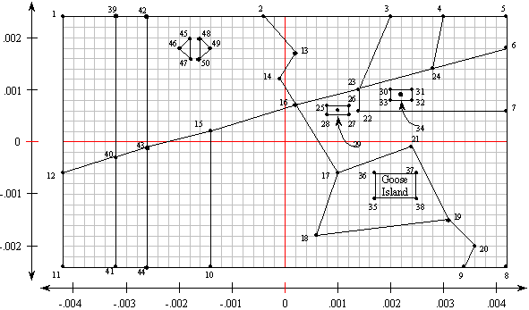
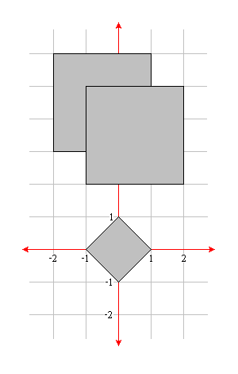

Warning:
There are currently slight differences between the schema listed in Annex E.1 and the on-line version Annex E.1 refers to.
This test suite uses the on-line version.
Warning:
There are currently slight differences between the schema listed in Annex E.1 and the on-line version Annex E.1 refers to.
This test suite uses the on-line version.
This test suite is based on the following OGC specification:
To ensure all of the tests in the test suite produce correct results, WMS implementations must meet the following requirements:
<Dimension name="elevation" units="CRS:88" unitSymbol="m" multipleValues="true" nearestValue="false"/>0/425/1</Dimension>It may also set a default value.
<Dimension name="elevation" units="CRS:88" unitSymbol="m" default="500" multipleValues="false" nearestValue="true"/>500,490,480</Dimension>
<Dimension name="time" units="ISO8601" multipleValues="true" nearestValue="true"/>2000-01-01T00:00:00Z/2000-01-01T00:01:00Z/PT5S</Dimension>It may also set a default value and/or set current="true".
Warning:
There are currently slight differences between the schema listed in Annex E.1 and the on-line version Annex E.1 refers to.
This test suite uses the on-line version.
The majority of the dataset is based on the Conformance Test Guidelines for OpenGIS Simple Features Specification for SQL, Revision 1.0 . This set of features makes up a map of a fictional location called Blue Lake. The features are as described in the Simple Features Specification for SQL document, except they have been converted to WGS84 coordinates and have been reoriented so the area is centered at 0 degrees latitude, 0 degrees longitude. Figure 1 shows an overview map of the area with the prominent features labeled. Figure 2 shows the location of each of the data points.
 |
|  |
Additional features have also been defined to test data at a larger scale.
These consist of a diamond and two overlapping squares, as shown in figure 3.
It does not matter which square appears on top.
|  |
More features have also been defined to test dimensional data.
To support testing the elevation dimension using terrain coverage data, a terrain dataset derived from DTED data has been defined. It has values that range from 0 to 425m that include a "high spot" with values > 325m and a "low spot" with values < 200m. The remainder of the dataset is filled with values between 200m and 325m, including a few values that are exactly 250m. It covers a one degree square area, centered at 0,0.
To support testing the elevation dimension using vector data, additional polygons representing the edge of the lake at other depths have been defined.
To support testing the time dimension, point geometries that represent the locations of automobiles along the roads at 5 second increments during a one minute interval have been defined.
The features are organized into layers as shown in table below. The layers may be named
in any fashion, but must be titled exactly as shown in the table.
| Layer Title | Type | Features Contained |
| cite:Autos | point | Contains point features representing automobiles along the roads. Required only for the time option. |
| cite:BasicPolygons | polygon | Contains all the features shown in figure 3. |
| cite:Bridges | point | Contains Cam Bridge. |
| cite:Buildings | polygon | Contains the two buildings along Main Street. |
| cite:DividedRoutes | line | Contains both lanes of Route 75. |
| cite:Forests | polygon | Contains the State Forest polygon. |
| cite:Lakes | polygon | Contains Blue Lake. For the vector elevation option, it also contains polygons representing the edge of the lake at other depths. |
| cite:MapNeatline | line | Contains the border surrounding the Blue Lake vicinity. |
| cite:NamedPlaces | polygon | Contains Ashton and Goose Island. |
| cite:Ponds | polygon | Contains both pools of Stock Pond. |
| cite:RoadSegments | line | Contains all the sections of Route 5, Main Street, and the dirt road. |
| cite:Streams | line | Contains Cam Stream and the unnamed stream south of Blue Lake. |
| cite:Terrain | raster | Contains raster terrain data. Required only for the raster elevation option. |
Metadata for each of these layers is supplied as XML files that adhere to the ISO 19139 schemas.
Detailed information about each of the tests can be found in the abstract test suite, which follows the ISO 19105 model.